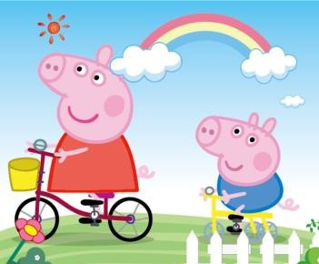

引言
本博客内容通过Markdown语法来撰写，作为一个刚入坑的萌新现在熟悉和总结一下语法结构，方便以后查询。
正文
标题
1 | # 一级标题 |
这里为了页面美观就不都列出来了，Markdown是会被解析成Html的，而Html中只有h1-h6六个标题，想用几级标题就加几个#就可以了
效果如下:
一级标题
二级标题
三级标题
列表
- 无序列表
1 | + Red * Red - Red |
任意使用’+’、’-‘、’*’都代表无序列表
- 有序列表
1 | 1. Red |
数字后加英文的点就代表有序列表
效果如下:
- 无序列表
- 无序列表
- 有序列表
- 有序列表
强调
1 | __加粗__ **加粗** |
两个_或者两个*代表字体加粗，单个代表斜体，两个~代表删除线
效果如下:
我是加粗
我是斜体我是删除线
引用
1 | > 直接引用 |
引用可以和标题、列表和表格等配合一起使用
效果如下:
直接引用(一级引用)
二级引用
三级引用
图片和链接
1 | 图片：  |

我是行内链接：行内链接
表格
- 居左：
:---- - 居中：
:---:或----- - 居右：
----:
效果如下
| 标题 | 标题 | 标题 |
|---|---|---|
| 居左测试文本 | 居中测试文本 | 居右测试文本 |
| 居左测试文本1 | 居中测试文本2 | 居右测试文本3 |
| 居左测试文本11 | 居中测试文本22 | 居右测试文本33 |
| 居左测试文本111 | 居中测试文本222 | 居右测试文本333 |
1 |
|
分割线和换行
连续使用三个以上-、*都代表分割线，行内除了空格外不能有其他字符
1 | --- |
效果如下
换行可以使用连续两个空格或者用html标签<br>来换行
保持原文和转义
Markdown里使用反单引号(键盘数字1左边的键)来保持原文
单个或者单行内多个字符使用一个反单引号就可以了
多行使用连续三个反单引号
Markdown转义字符和js的规则完全一样使用\即可
最后强调一下，所有的符号后都需要加空格，否则无法解析。
参考文献：
.md即markdown文件的基本常用编写语法（图文并茂）
Markdown的常用语法(个人总结)